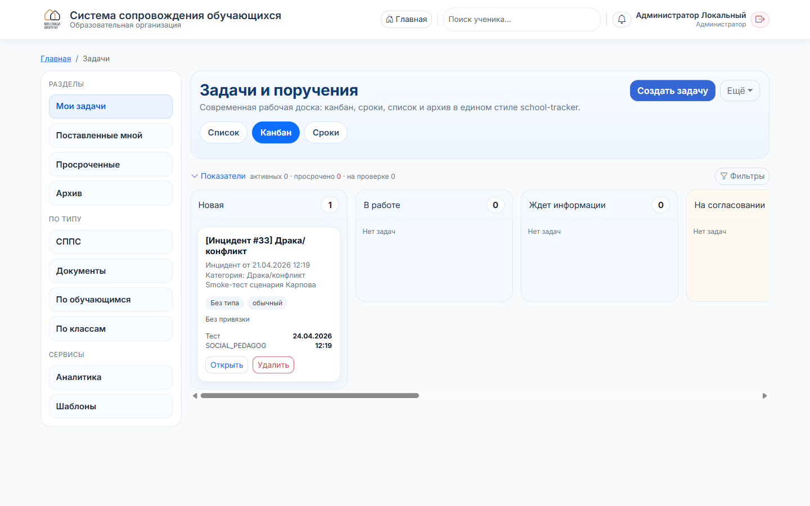
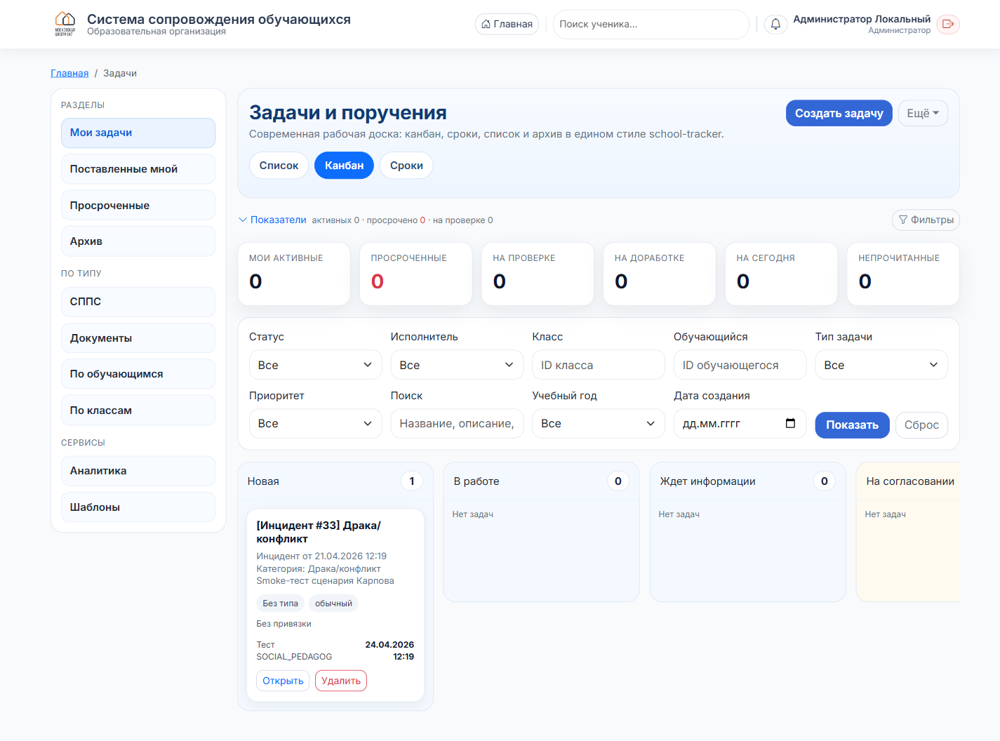
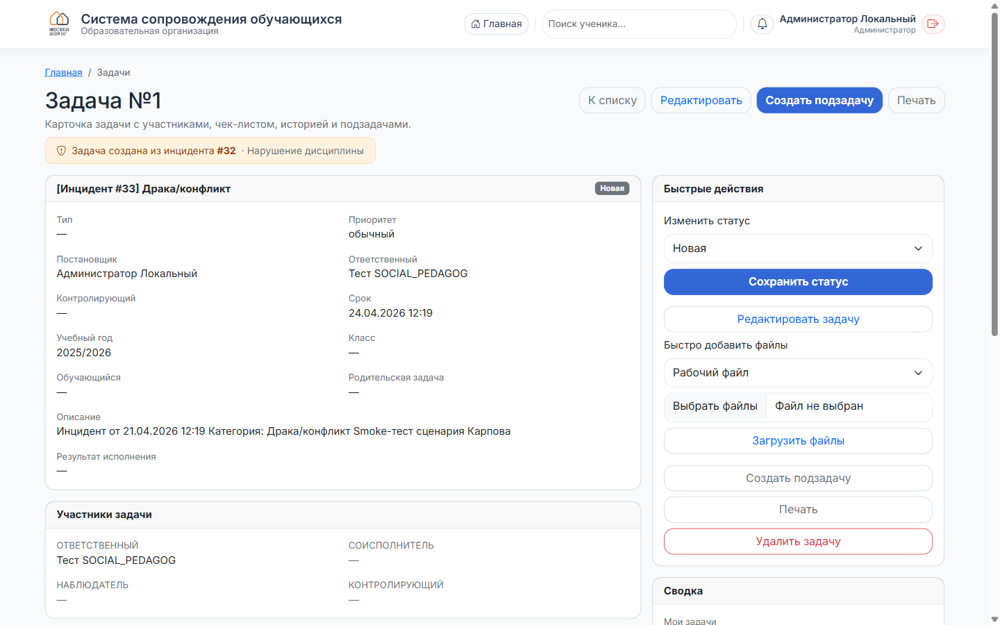

Администратор
Задачи и поручения
Модуль задач: рабочая доска, виды отображения, фильтры, связь с инцидентами.
1
Как попасть
- Плитка «Мои задачи» в быстрых действиях на главной.
- Или прямой URL
/tasks/.
Откроется ваша рабочая доска. По умолчанию показываются ваши задачи (раздел «Мои задачи» в сайдбаре).
2
Структура страницы

Страница разделена на две части:
- Сайдбар слева — навигация в 3 блока:
- Разделы: Мои задачи · Поставленные мной · Просроченные · Архив.
- По типу: СППС · Документы · По обучающимся · По классам.
- Сервисы: Аналитика · Шаблоны.
- Рабочая доска справа — заголовок, кнопки, переключатель видов, показатели, фильтры, собственно доска.
3
Кнопки в шапке
- Создать задачу — основное действие.
- Ещё ▾ — меню с редкими действиями: массовое создание, выгрузка в Excel, переход в уведомления задач.
4
Три вида доски
- Список — обычная таблица со всеми полями (название, статус, приоритет, ученик, класс, исполнитель, срок, чек-лист, создана).
- Канбан (по умолчанию) — колонки по статусам: Новая · В работе · Ждёт информации · На согласовании · На проверке · Возвращена на доработку · Выполнена · Закрыта · Отменена. Карточки задач перетаскиваются взглядом — статус меняется внутри карточки задачи.
- Сроки — колонки: Просроченные · На сегодня · На этой неделе · На следующей неделе · Без срока · Завершённые. Быстрый контроль дедлайнов.
Архив вынесен в сайдбар (раздел «Архив»), в переключатель видов больше не входит — чтобы не дублировать.
5
Показатели и фильтры — сворачиваются

Чтобы доска не была перегруженной, под переключателем видов есть компактная полоса:
- Слева кнопка «Показатели ▾» с краткой сводкой «активных X · просрочено Y · на проверке Z». Клик разворачивает 6 карточек-метрик: мои активные, просроченные, на проверке, на доработке, на сегодня, непрочитанные уведомления.
- Справа кнопка «Фильтры». Если применён хотя бы один фильтр — в ней появляется цифра (например, «Фильтры 3»). Клик разворачивает полную форму: статус, исполнитель, класс, обучающийся, тип задачи, приоритет, поиск, учебный год, дата создания.
Если вы не пользуетесь фильтрами — они всегда свёрнуты и не отвлекают. Как только применили — разворачиваются автоматически.
6
Быстрые чипы под переключателем
Сразу под Списком/Канбаном/Сроками — компактный ряд цветных пилюль: Просроченные · На сегодня · Без срока · Высокий приоритет · Без исполнителя. Клик — применяется соответствующий быстрый фильтр. Ссылка «× Сбросить» появляется только если чип активен.
Это «горячие» срезы. Для более тонкой настройки — откройте «Фильтры».
7
Карточка задачи

Клик по названию задачи или по кнопке «Открыть». Внутри:
- Плашка «Задача создана из инцидента #N» — оранжевая, если задача родилась из инцидента. Клик ведёт к карточке инцидента.
- Основные поля: тип, приоритет, постановщик, ответственный, контролирующий, срок, учебный год, класс, обучающийся, родительская задача, описание, результат исполнения.
- Панель справа «Быстрые действия»: смена статуса, редактирование, загрузка файлов, создание подзадачи, печать, удаление.
- Участники задачи: ответственный · соисполнитель · наблюдатель · контролирующий.
- Чек-лист, файлы, комментарии, история изменений — ниже.
8
Как задачи рождаются из инцидентов
Когда вы в карточке инцидента назначаете исполнителем сотрудника с ролью PSYCHOLOGIST, SOCIAL_PEDAGOG или METHODIST — система автоматически создаёт задачу:
- Название
[Инцидент #N] Категория.
- Описание — копия описания инцидента.
- Responsible — тот же сотрудник.
- Срок — +3 дня (редактируется).
- Ссылка на инцидент (
task.incident_id).
Переназначили исполнителя — у существующей задачи сменится responsible (один инцидент → одна активная задача). Задача уже «Выполнена/Закрыта» — создастся новая.
Подробности и логика уведомлений — в инструкции 02 · Инциденты, шаг 7.
9
Уведомления задач
Колокольчик в шапке показывает уведомления задач в блоке «Задачи» (иконка ☑). Используйте воронку в колокольчике, чтобы отфильтровать только задачи.
Исполнителям задач приходят уведомления:
- Новая задача назначена.
- Сменён исполнитель (ответственный).
- Комментарий от постановщика.
- Задача просрочена.
Страница всех уведомлений задач: «Ещё ▾» → «Уведомления» или /tasks/notifications.
Удалять задачи могут постановщик и ADMIN. Перед удалением — посмотрите, не связана ли задача с инцидентом (плашка сверху карточки). Если связана — лучше отменить, а не удалять, чтобы сохранилась история по инциденту.